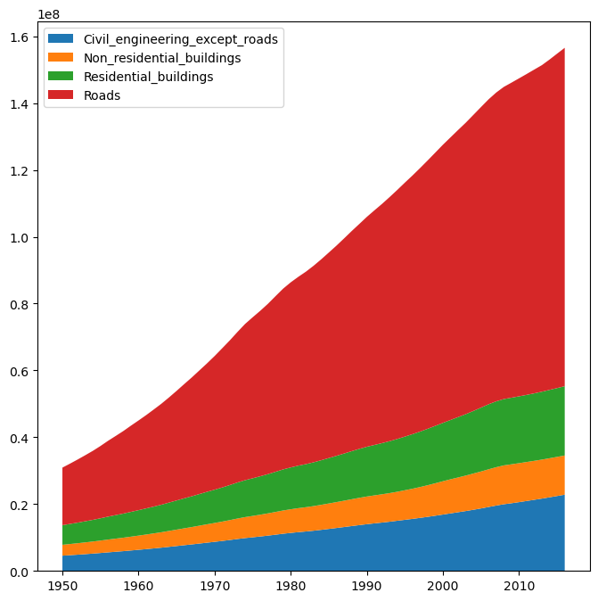
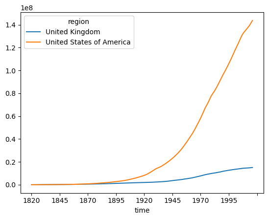

Working with MISO2 data
[1]:
import matplotlib.pyplot as plt
import os
import numpy as np
from model.output.MISO2_database import MISO2Database
[2]:
database = MISO2Database()
database.restore_from_parquet(os.path.join(os.getcwd(), os.pardir, os.pardir, "output", "usuk"), "miso_db.json")
MISO2Databases are just a wrapper object around the Pandas DataFrames the MISO2 model outputs. You can query the categories with get_categories() to see what dimensions are available and then retrieve the data you need with get_subset().
[8]:
database.get_categories("enduse")
[8]:
{'type': ['result'],
'region': ['United Kingdom', 'United States of America'],
'name': ['F_10_11_supply_EoL_waste_enduse',
'F_9_10_GAS_enduse',
'S10_stock_enduse'],
'material': ['aggr_4asph',
'aggr_4concr',
'aggr_downcycl',
'aggr_virgin',
'aluminum',
'asphalt',
'bitumen',
'bricks',
'cement',
'chromium',
'concrete',
'copper',
'glass_cont',
'glass_flat',
'iron_steel',
'lead',
'manganese',
'metals_other',
'nickel',
'paper',
'plastic',
'tin',
'wood',
'zinc'],
'sector': ['Civil_engineering_except_roads',
'Computers_and_precision_instruments',
'Electrical_equipment',
'Food_packaging',
'Furniture_and_other_manufactured_goods_nec',
'Machinery_and_equipment',
'Motor_vehicles_trailers_and_semi-trailers',
'Non_residential_buildings',
'Other_transport_equipment',
'Printed_matter_and_recorded_media',
'Products_nec',
'Residential_buildings',
'Roads',
'Textiles'],
'time': [1820, 2016]}
[52]:
sectors = ["Civil_engineering_except_roads", "Residential_buildings", "Roads", "Non_residential_buildings"]
us_stocks_main_enduses = database.get_subset(output_type="enduse", parameter="S10_stock_enduse", sector=sectors, drop_levels=True).groupby("sector").sum()
[74]:
plt.figure(figsize=(8,8))
start_date = 1950
plt.stackplot(np.arange(start_date, 2017), us_stocks_main_enduses.iloc[:,start_date-1820:], labels=us_stocks_main_enduses.index)
plt.legend(loc='upper left')
plt.show()

[76]:
plt.figure(figsize=(8,8))
all_stocks = database.get_subset(output_type="enduse", parameter="S10_stock_enduse", drop_levels = True).groupby("region").sum()
all_stocks.T.plot(kind="line")
[76]:
<Axes: xlabel='time'>
<Figure size 800x800 with 0 Axes>
